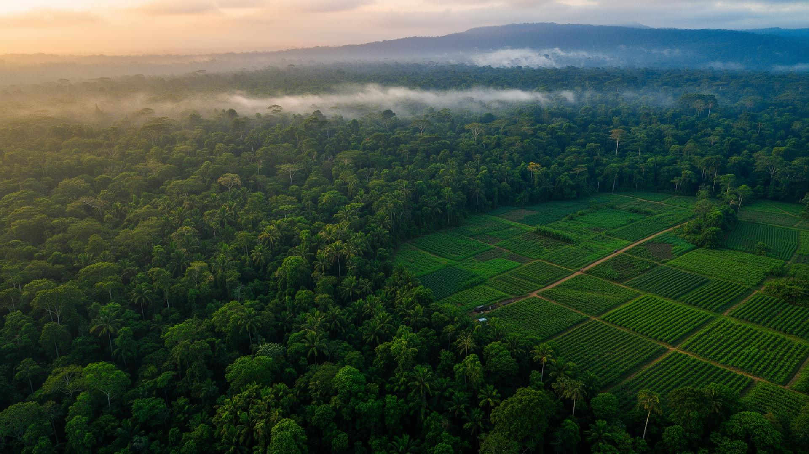
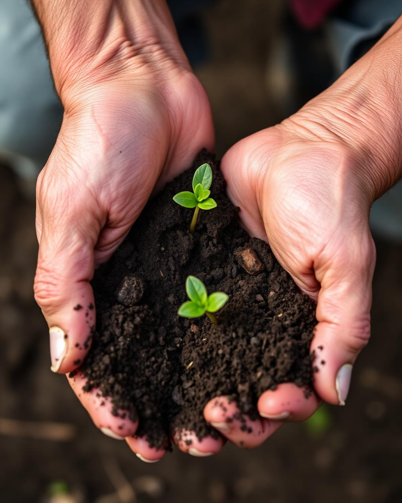

Equilíbrio absoluto entre a potência da produção em larga escala e a preservação vital do bioma brasileiro.
Substituição do Nitrogênio Químico em Soja
Eliminação completa de resíduos sintéticos no solo e redução drástica da pegada de carbono na cadeia produtiva, alinhando alta produtividade a metas globais de descarbonização.
Hectares Preservados
A pesquisa realizada pela EMBRAPA revela que as áreas dedicadas à preservação da vegetação nativa no interior dos imóveis rurais somam 282,8 milhões de hectares preservados
Biodefensivos Agrígolas
Dados compilados pela Embrapa apontam o Brasil como líder global no uso de controle biológico na agricultura de larga escala.

A agricultura não deve ser uma extração, mas um diálogo contínuo com a geologia local.
Utilizamos tecnologia de satélite e análise molecular para entender cada centímetro de solo. O resultado é uma produtividade 100% superior sem derrubar uma única árvore nativa. Além de proporcionar lucro com o mercado madereiro em áreas replantadas.
Cobertura vegetal contínua, rotação inteligente e biofertilizantes microbiológicos.
Monitoramento real de expansões ilegais sobre as florestas
Educação ambiental e incentivo monetário a prática da agricultura sustentável.
"O segredo da vida é o solo, porque do solo dependem as plantas, a água, o clima e a nossa vida. Tudo está interligado. Não existe ser humano sadio se o solo não for sadio."— Dra. Ana Maria Primavesi